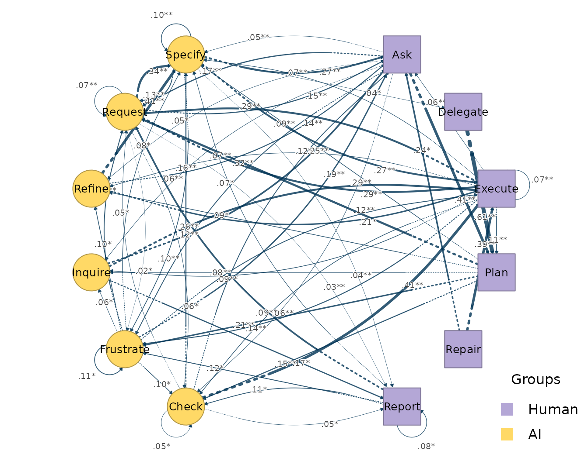
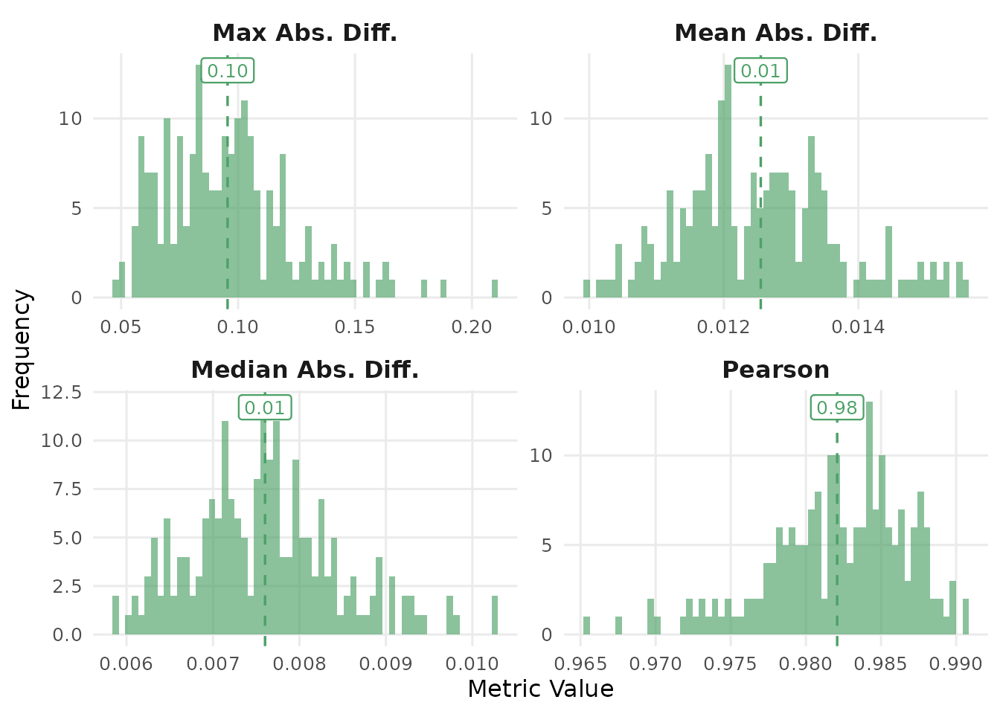
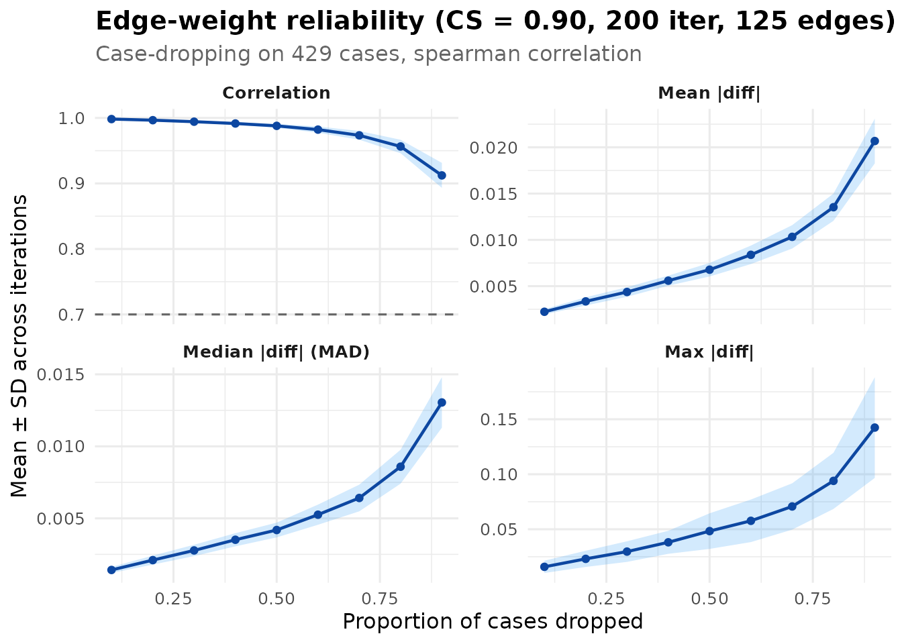
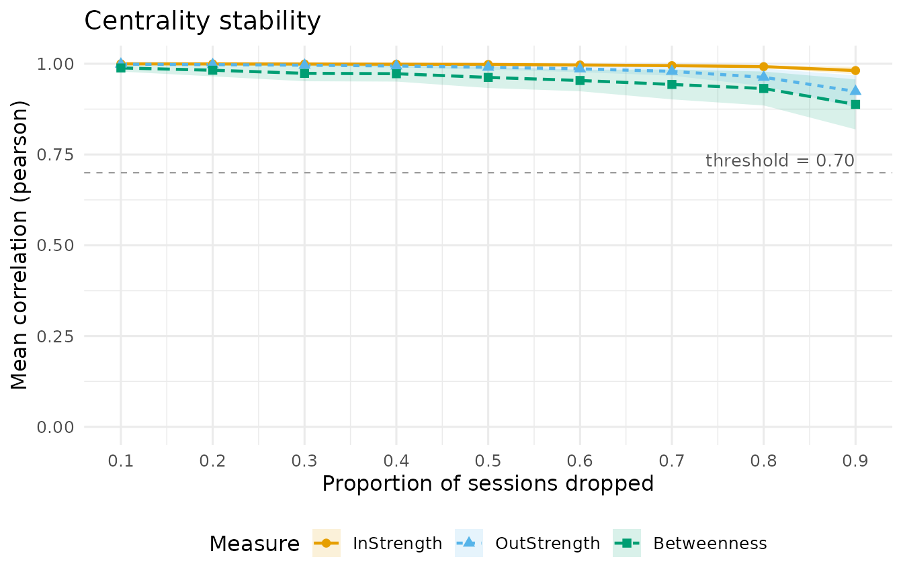

Model assessment
Written by Mohammed Saqr and Sonsoles López-Pernas
Source:vignettes/articles/model-assessment.Rmd
model-assessment.RmdA heterogeneous transition network is an estimate. Every edge weight is a proportion computed from the sessions that happened to be observed, and every centrality is a function of those proportions. Claims drawn from one estimate, that a transition from a human request to an AI action is strong, that one code is more central than another, or that the AI hands back to the human more often than it continues on its own, rest on the assumption that another sample of sessions would give a similar network. Model assessment quantifies how far that assumption holds before the network is used as evidence (Saqr et al., 2025).
The assessments answer different questions and sit at different
levels of the network. The bootstrap and its closed-form counterpart ask
which individual edges are estimated precisely enough to interpret.
Split-half reliability asks whether the network as a whole would be the
same in another half of the data. Case-dropping stability asks how many
sessions can be lost before the ordering of the edges or of the node
centralities changes. A fourth question, whether a first-order network
is adequate at all, is the subject of the Markov-order adequacy guide. Every function
below takes an htna network or a grouped network, and every result has a
plot() method.
Data
human_ai holds 429 sessions of human-AI pair programming
coded into six human and six AI codes; each row is one coded event.
-
Session:
session_id; the unit that is resampled, split and dropped. -
Code:
code; the node of the network. -
Actor type:
actor_type,"Human"or"AI". -
Order:
order_in_session; the position of the event in its session.
The network assessed throughout is the relative transition network of all sessions.
data(human_ai)
net <- build_htna(human_ai, actor_type = "actor_type")Which edges are estimated precisely?
bootstrap_htna() resamples the 429 sessions with
replacement, rebuilds the network on every resample and summarizes the
distribution of each edge weight. Under the default stability test, an
edge is significant when its resampled weights stay within 75% to 125%
of the observed weight often enough for the p-value to fall below
0.05.
boot <- bootstrap_htna(net, iter = 200, seed = 1)
boot
#> Edge Mean 95% CI p
#> -----------------------------------------------
#> Delegate → Plan 0.611 [0.546, 0.673] **
#> Refine → Specify 0.413 [0.363, 0.466] **
#> Check → Execute 0.411 [0.383, 0.441] **
#> Ask → Plan 0.411 [0.384, 0.437] **
#> Repair → Execute 0.389 [0.323, 0.457] **
#> ... and 59 more significant edges
#>
#> Bootstrap Network [Transition Network (relative) | directed]
#> Iterations : 200 | Nodes : 12
#> Edges : 64 significant / 135 total
#> CI : 95% | Inference: stability | CR [0.75, 1.25]Of the 135 non-zero edges, 64 are reproduced by the resamples within
the consistency range. The strongest edge, from the AI’s
Delegate to its own Plan, has a bootstrap mean
of 0.611 with a 95% interval from 0.546 to 0.673. The edge table, one
row per edge, holds the interval and the p-value of every edge.
head(summary(boot))
#> from to weight mean sd p_value sig ci_lower ci_upper cr_lower cr_upper
#> 1 Ask Ask 0.0182 0.0185 0.00312 0.15423 FALSE 0.0129 0.0242 0.0137 0.0228
#> 2 Ask Check 0.0632 0.0635 0.00508 0.00995 TRUE 0.0537 0.0732 0.0474 0.0790
#> 3 Ask Execute 0.0221 0.0223 0.00336 0.07960 FALSE 0.0165 0.0289 0.0165 0.0276
#> 4 Ask Frustrate 0.1158 0.1152 0.00747 0.00498 TRUE 0.1004 0.1284 0.0868 0.1447
#> 5 Ask Inquire 0.0632 0.0626 0.00518 0.00498 TRUE 0.0526 0.0727 0.0474 0.0790
#> 6 Ask Plan 0.4088 0.4108 0.01389 0.00498 TRUE 0.3840 0.4369 0.3066 0.5110Weak edges fail the stability test even when they are clearly
present: the self-transition of Ask has a weight of 0.0182
and an interval from 0.0129 to 0.0242 that excludes zero, but its
resampled weights leave the narrow consistency range around such a small
weight too often (p = 0.154). The test asks whether a weight is
reproduced, not whether it differs from zero.
plot_htna_bootstrap() draws the network with the edges that
pass the test.
plot_htna_bootstrap(boot, display = "significant")
certainty_htna() derives the same quantities in closed
form, from the Dirichlet posterior of each row of transition counts,
without resampling.
cert <- certainty_htna(net)
cert
#> Edge Mean 95% CI p
#> -----------------------------------------------
#> Delegate → Plan 0.600 [0.543, 0.656] ***
#> Refine → Specify 0.410 [0.377, 0.445] ***
#> Check → Execute 0.410 [0.383, 0.437] ***
#> Ask → Plan 0.408 [0.388, 0.428] ***
#> Repair → Execute 0.384 [0.326, 0.444] **
#> ... and 63 more certain edges
#>
#> Certainty (Dirichlet) [Transition Network (relative) | directed]
#> Prior : Dirichlet(0.50) | Nodes : 12
#> Edges : 68 certain / 135 total
#> CI : 95% | Inference: stability | CR [0.75, 1.25]The closed-form analysis marks 68 edges as certain, and its intervals
for the strongest edges are close to the bootstrap ones (0.600, from
0.543 to 0.656, for Delegate to Plan). The two
verdicts agree on most edges:
both <- merge(summary(boot), summary(cert), by = c("from", "to"))
xtabs(~ sig.x + sig.y, data = both)
#> sig.y
#> sig.x FALSE TRUE
#> FALSE 64 7
#> TRUE 3 61Of the 135 edges, 61 pass both tests and 64 fail both; the 10 disagreements are edges near the boundary of the consistency range. The closed-form analysis treats every transition as independent and so ignores the nesting of transitions in sessions, which the bootstrap respects; it is the faster screen, and the bootstrap the analysis to report.
Would another half of the data give the same network?
reliability_htna() splits the sessions at random into
two halves 200 times, estimates a network from each half, and compares
the two networks.
rel <- reliability_htna(net, iter = 200, seed = 1)
rel
#> Split-Half Reliability (200 iterations, split = 50%)
#> Mean Abs. Diff. mean = 0.0125 sd = 0.0012
#> Median Abs. Diff. mean = 0.0076 sd = 0.0009
#> Pearson mean = 0.9821 sd = 0.0047
#> Max Abs. Diff. mean = 0.0955 sd = 0.0280Two networks estimated from disjoint halves of the sessions correlate at 0.982 on average (SD 0.0047), and their edge weights differ by 0.0125 on average. Even the largest difference between the halves, 0.0955 on average, is small beside the strongest edges of around 0.4 to 0.6. The network as a whole does not depend on which sessions were sampled.
plot(rel)
How many sessions can be lost before the edge ordering changes?
casedrop_reliability_htna() drops increasing proportions
of the sessions, from 10% to 90%, re-estimates the network and
correlates its edge weights with those of the full network (Spearman
correlation, off-diagonal edges). The case-dropping stability (CS)
coefficient is the largest proportion that can be dropped while the
correlation stays above 0.7 in at least 95% of the 200 resamples per
proportion (Epskamp et al., 2018).
cd <- casedrop_reliability_htna(net, iter = 200, seed = 1)
cd
#> Edge-weight Case-dropping Stability
#> Cases (resampled) : 429
#> Edges assessed : 125 (diagonal excluded)
#> Iterations / prop : 200
#> Correlation method : spearman
#> CS-coefficient (r) : 0.90 (threshold=0.70, certainty=0.95)
#>
#> Model-level reliability across iterations (mean +/- sd per drop):
#> drop_prop p=0.1 p=0.2 p=0.3 p=0.4 p=0.5 p=0.6 p=0.7 p=0.8 p=0.9
#> mean|diff| 0.002+- 0.000 0.003+- 0.000 0.004+- 0.001 0.006+- 0.001 0.007+- 0.001 0.008+- 0.001 0.010+- 0.001 0.014+- 0.001 0.021+- 0.002
#> median|diff| 0.001+- 0.000 0.002+- 0.000 0.003+- 0.000 0.004+- 0.000 0.004+- 0.001 0.005+- 0.001 0.006+- 0.001 0.009+- 0.001 0.013+- 0.002
#> cor 0.998+- 0.001 0.997+- 0.001 0.994+- 0.002 0.992+- 0.002 0.988+- 0.003 0.982+- 0.005 0.973+- 0.007 0.956+- 0.010 0.912+- 0.019
#> max|diff| 0.016+- 0.006 0.023+- 0.007 0.030+- 0.009 0.038+- 0.010 0.048+- 0.016 0.058+- 0.019 0.071+- 0.021 0.094+- 0.026 0.142+- 0.046The CS coefficient is 0.90, the largest proportion tested: even with 90% of the sessions dropped, the 125 off-diagonal edge weights correlate with those of the full network at 0.912 on average. The ordering of the edges is therefore stable well beyond the conventional criterion of 0.5.
plot(cd)
Are the centrality rankings stable?
Analyses often interpret rankings of codes by centrality rather than
single edges. centrality_stability_htna() applies the
case-dropping procedure to the in-strength, out-strength and betweenness
of the codes.
cs <- centrality_stability_htna(net, iter = 200, seed = 1)
as.data.frame(cs)
#> measure cs
#> 1 InStrength 0.9
#> 2 OutStrength 0.9
#> 3 Betweenness 0.9All three measures reach the maximum CS coefficient of 0.9. The correlation traces behind the coefficients show how much of that margin each measure has:
as.data.frame(cs, what = "correlations")
#> measure drop_prop mean_cor sd_cor prop_above
#> 1 InStrength 0.1 1.000 0.000131 1.000
#> 2 InStrength 0.2 0.999 0.000345 1.000
#> 3 InStrength 0.3 0.999 0.000470 1.000
#> 4 InStrength 0.4 0.999 0.000670 1.000
#> 5 InStrength 0.5 0.998 0.001039 1.000
#> 6 InStrength 0.6 0.997 0.002379 1.000
#> 7 InStrength 0.7 0.995 0.003097 1.000
#> 8 InStrength 0.8 0.992 0.003883 1.000
#> 9 InStrength 0.9 0.981 0.010112 1.000
#> 10 OutStrength 0.1 0.999 0.000968 1.000
#> 11 OutStrength 0.2 0.997 0.001889 1.000
#> 12 OutStrength 0.3 0.996 0.002616 1.000
#> 13 OutStrength 0.4 0.994 0.004084 1.000
#> 14 OutStrength 0.5 0.990 0.006655 1.000
#> 15 OutStrength 0.6 0.986 0.009156 1.000
#> 16 OutStrength 0.7 0.979 0.011859 1.000
#> 17 OutStrength 0.8 0.963 0.024170 1.000
#> 18 OutStrength 0.9 0.924 0.043973 1.000
#> 19 Betweenness 0.1 0.988 0.010053 1.000
#> 20 Betweenness 0.2 0.982 0.016976 1.000
#> 21 Betweenness 0.3 0.974 0.021773 1.000
#> 22 Betweenness 0.4 0.973 0.021666 1.000
#> 23 Betweenness 0.5 0.962 0.029148 1.000
#> 24 Betweenness 0.6 0.954 0.029645 1.000
#> 25 Betweenness 0.7 0.943 0.041148 1.000
#> 26 Betweenness 0.8 0.932 0.046697 1.000
#> 27 Betweenness 0.9 0.888 0.068852 0.975In-strength barely moves (a mean correlation of 0.981 with 90% of the sessions dropped), out-strength falls to 0.924, and betweenness, which depends on shortest paths and reacts to small changes in the weights, falls to 0.888, with 97.5% of the resamples still above the threshold. All three rankings are stable enough to report; betweenness is the one to read with the most care.
plot(cs)
Which assessment to use
| Question | Function | Criterion used here |
|---|---|---|
| Which edges are reproduced by resampling? | bootstrap_htna() |
p < 0.05 under the stability test |
| The same, in closed form | certainty_htna() |
interval within the consistency range |
| Is the whole network the same in another half of the data? | reliability_htna() |
mean split-half correlation |
| How many sessions can be lost before the edge order changes? | casedrop_reliability_htna() |
CS coefficient above 0.5 |
| Are centrality rankings stable? | centrality_stability_htna() |
CS coefficient above 0.5 per measure |
| Is a first-order network adequate? | markov_order_test_htna() |
see Markov-order adequacy |
The assessments are complementary and are best reported together. In these data every criterion is met: the network is reliable across halves, its edge order and centrality rankings survive the loss of most sessions, and about half of its edges are individually reproducible. For a grouped network, every function returns one result per cohort; the Grouped heterogeneous transition networks vignette shows the grouped forms.
References
Epskamp, S., Borsboom, D., & Fried, E. I. (2018). Estimating psychological networks and their accuracy: A tutorial paper. Behavior Research Methods, 50(1), 195-212. https://doi.org/10.3758/s13428-017-0862-1
Saqr, M., López-Pernas, S., Törmänen, T., Kaliisa, R., Misiejuk, K., & Tikka, S. (2025). Transition network analysis: A novel framework for modeling, visualizing, and identifying the temporal patterns of learners and learning processes. Proceedings of the 15th International Learning Analytics and Knowledge Conference, 351-361. https://doi.org/10.1145/3706468.3706513